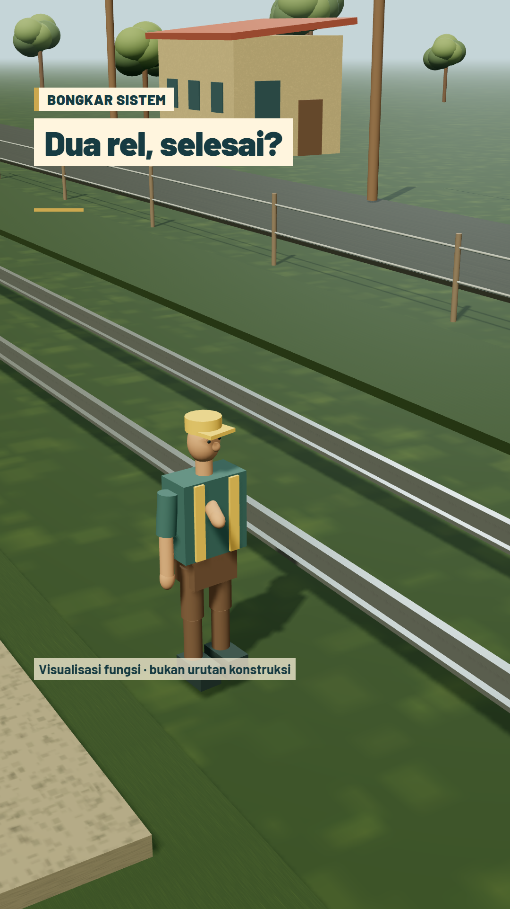
1: Dua rel, selesai?
0.00–5.71s · estimate
Lower the rails until steel contacts soil. Builder points at the incomplete track and lifts a thumb.

Lower the rails until steel contacts soil. Builder points at the incomplete track and lifts a thumb.
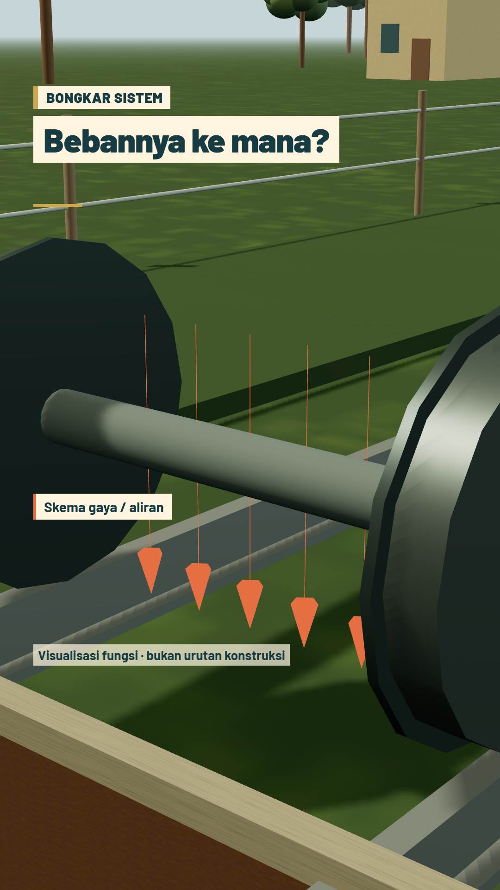
Wheel settles onto the rail head. A schematic load path exposes concentrated support and illustrative settlement.
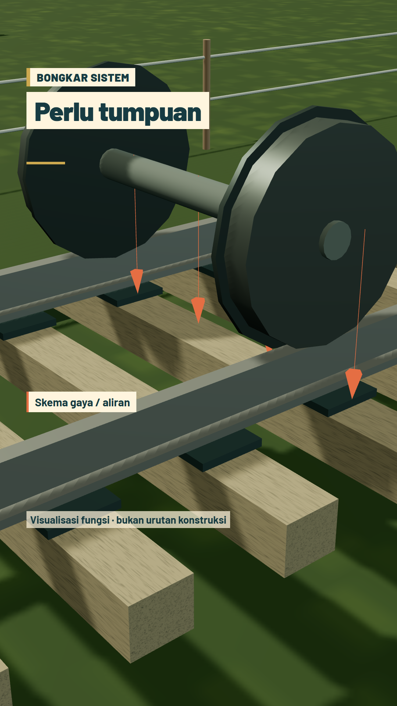
Sleepers move beneath the lifted rails and meet their rail seats. Load markers spread across sleeper width; the unsecured rail is isolated.
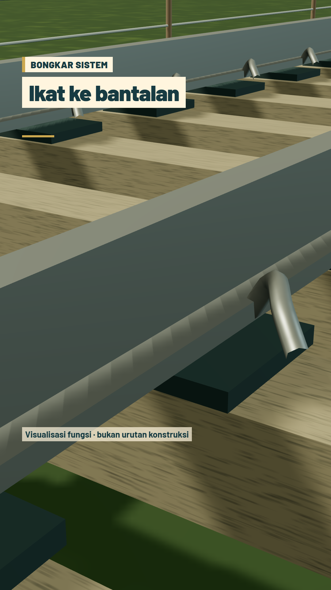
Pad and rail foot meet the sleeper seat. Paired clips slide over the rail foot and hold it.
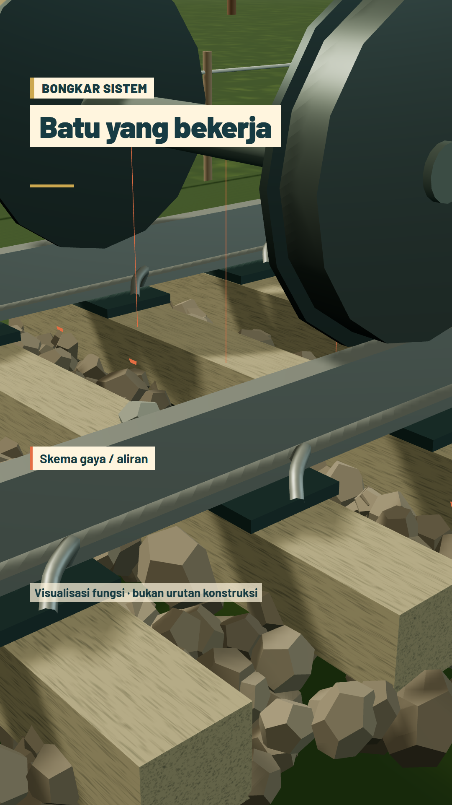
Angular stones pour into the support bed. Macro stones meet their neighbors; schematic load continues down.
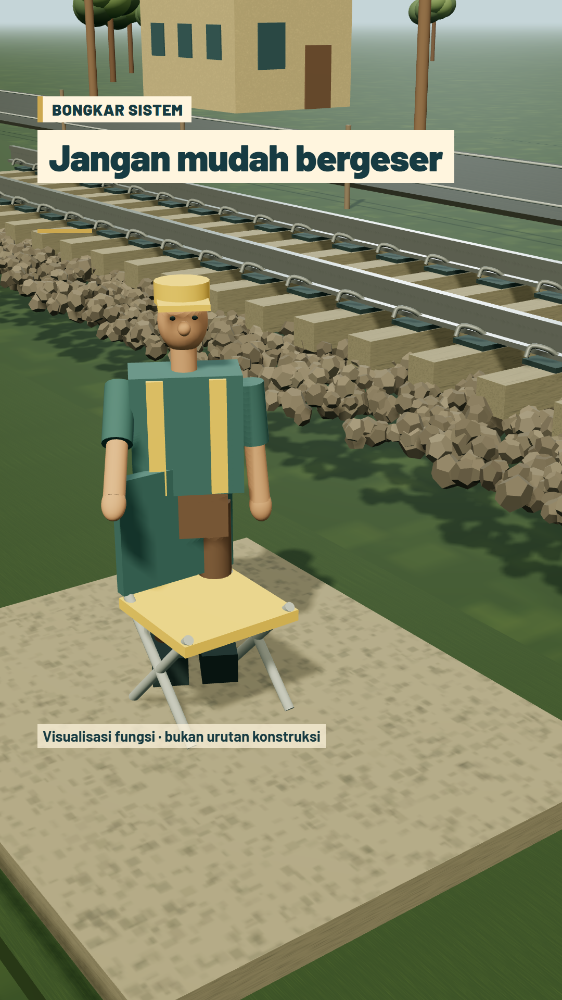
Shoulder stones approach and pack beside sleeper ends. Lateral restraint is shown; builder unfolds chair on the verge.
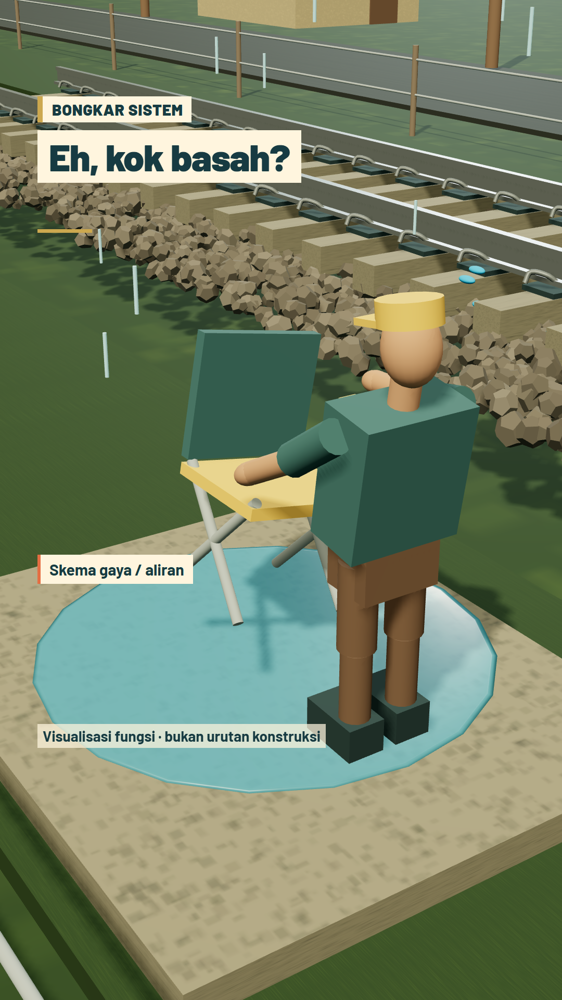
Water enters voids and collects where there is no outfall. Chair foot meets puddle; builder recoils and lifts the chair.
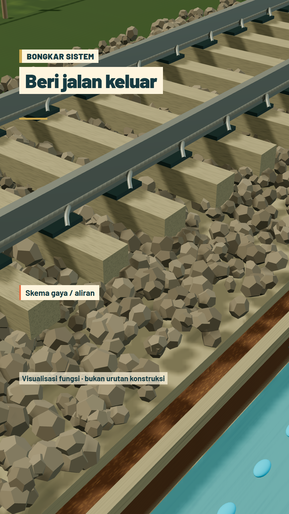
Local cutaway reveals the formation and continuous drainage route. Blue schematic water travels from the support zone into the side drain and outlet.
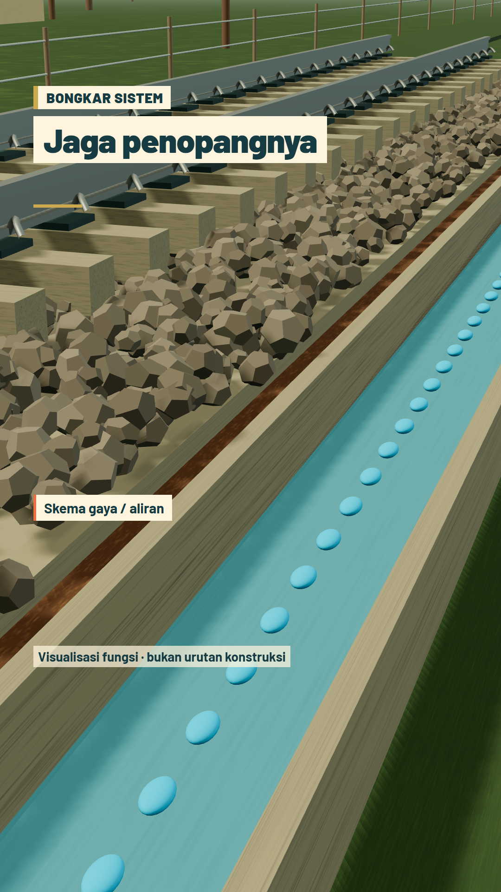
Trapped water leaves through the lower outlet. Schematic load reaches the formation while the support state remains continuous.
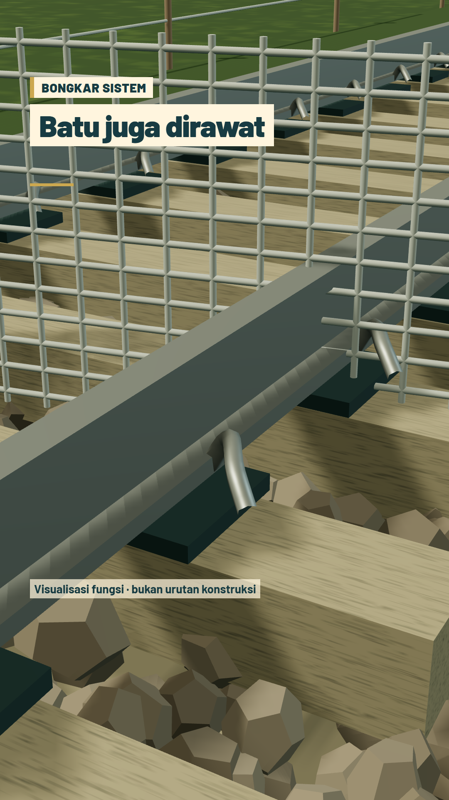
Fine material settles into the void window. A screen separates fines; clean angular stones return.
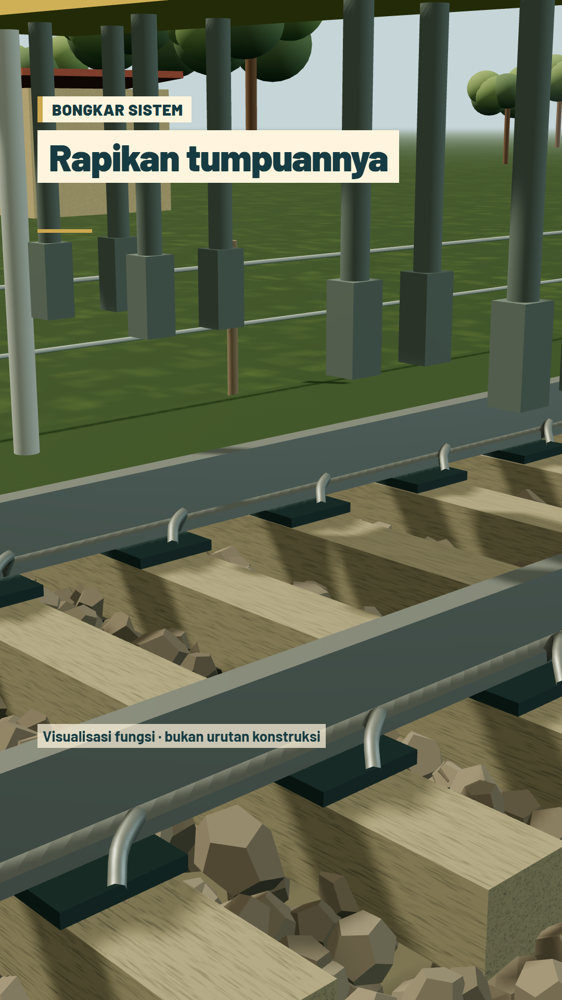
Maintenance head raises the rail/sleeper panel for correction. Tines insert and squeeze ballast beneath the sleeper, then withdraw.
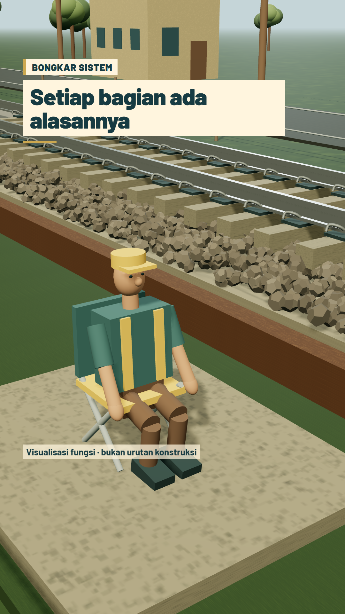
A wheel load passes through the completed supported track. Builder lowers onto the dry chair away from the railway; the opening confidence pays off.